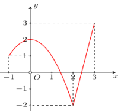
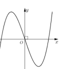
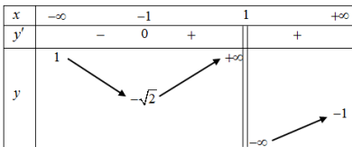
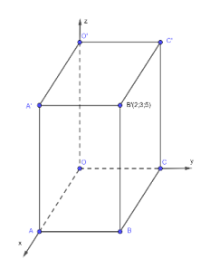

Giá trị nhỏ nhất của hàm số trên đoạn được xác định từ đồ thị hoặc bảng biến thiên, lấy giá trị $y$ nhỏ nhất trong khoảng đó.
Cho hàm số $y=f(x)$ liên tục trên đoạn $[-1;3]$ và có đồ thị như hình vẽ. Giá trị nhỏ nhất của hàm số đã cho trên đoạn $[-1;3]$ bằng
Chọn đáp án:
Lời giải:
Từ đồ thị hàm số trên đoạn $[-1;3]$, giá trị nhỏ nhất của $y=f(x)$ là $-2$.
Đáp án: B.
Hàm số đồng biến khi $f'(x) \geq 0$, nghịch biến khi $f'(x) \leq 0$. Xét đạo hàm để tìm khoảng đơn điệu.
Cho hàm số $y=\left(\frac{3}{5}\right)^{x^2-2x+3}$. Trong các khẳng định sau, khẳng định nào đúng?
Chọn đáp án:
Lời giải:
Tập xác định: $D=\mathbb{R}$.
Đạo hàm: $y'=(2x-2) \cdot \left(\frac{3}{5}\right)^{x^2-2x+3} \cdot \ln \left(\frac{3}{5}\right)$.
Vì $\ln \left(\frac{3}{5}\right) < 0$, nên $y' \geq 0 \Leftrightarrow 2x-2 \leq 0 \Leftrightarrow x \leq 1$.
Hàm số đồng biến trên $(-\infty;1]$.
Đáp án: C.
Xác định dạng đồ thị bằng cách xét đạo hàm, cực trị, và hình dạng tổng quát của hàm số.
Đồ thị của hàm số nào dưới đây có dạng như đường cong trong hình bên?
Chọn đáp án:
Lời giải:
Hàm số $y=x^3-3x$ có dạng đồ thị bậc ba với hai cực trị, phù hợp với hình vẽ.
Đáp án: A.
Tọa độ của $\vec{u}+\vec{v}$ là tổng các thành phần tương ứng: $(u_1+v_1; u_2+v_2; u_3+v_3)$.
Trong không gian $Oxyz$, cho hai vector $\vec{u}=(1;2;0)$ và $\vec{v}=(-2;1;3)$. Tọa độ của vector $\vec{u}+\vec{v}$ là
Chọn đáp án:
Lời giải:
$\vec{u}+\vec{v}=(1+(-2);2+1;0+3)=(-1;3;3)$.
Đáp án: D.
Đường tiệm cận ngang tồn tại nếu $\lim_{x \to \pm \infty} f(x) = k$. Số đường tiệm cận ngang là số giá trị $k$ khác nhau.
Cho hàm số $y=f(x)$ có bảng biến thiên như sau:

Số đường tiệm cận ngang của đồ thị hàm số $y=f(x)$ là
Chọn đáp án:
Lời giải:
Từ bảng biến thiên: $\lim_{x \to +\infty} y = -1$, $\lim_{x \to -\infty} y = 1$.
Hàm số có hai đường tiệm cận ngang: $y = -1$ và $y = 1$.
Đáp án: C.
Góc giữa hai mặt phẳng: $\cos \theta = \frac{|\vec{n_P} \cdot \vec{n_Q}|}{|\vec{n_P}| |\vec{n_Q}|}$, với $\vec{n_P}$, $\vec{n_Q}$ là vector pháp tuyến.
Cho hai mặt phẳng $(P): 2x-y-z-3=0$ và $(Q): x-z-2=0$. Góc giữa hai mặt phẳng $(P)$ và $(Q)$ bằng
Chọn đáp án:
Lời giải:
Vector pháp tuyến: $\vec{n_P}=(2;-1;-1)$, $\vec{n_Q}=(1;0;-1)$.
$\cos ((P);(Q)) = \frac{|(2;-1;-1) \cdot (1;0;-1)|}{\sqrt{2^2+(-1)^2+(-1)^2} \cdot \sqrt{1^2+0^2+(-1)^2}} = \frac{|2+0+1|}{\sqrt{6} \cdot \sqrt{2}} = \frac{3}{\sqrt{12}} = \frac{\sqrt{3}}{2}$.
$\Rightarrow ((P);(Q)) = 30^\circ$.
Đáp án: A.
Khoảng tứ phân vị $\Delta_Q = Q_3 - Q_1$, với $Q_1$ là tứ phân vị thứ nhất, $Q_3$ là tứ phân vị thứ ba, tính từ mẫu số liệu ghép nhóm.
Cho bảng số liệu khảo sát về tuổi thọ (đơn vị: nghìn giờ) của một loại bóng đèn:
| Tuổi thọ | $[3;5)$ | $[5;7)$ | $[7;9)$ | $[9;11)$ | $[11;13)$ |
|---|---|---|---|---|---|
| Số bóng đèn | 11 | 20 | 29 | 40 | 30 |
Chọn đáp án:
Lời giải:
Số mẫu: $n=130$.
Tứ phân vị thứ nhất: $Q_1$ tại vị trí $\frac{130}{4}=32.5$, thuộc $[7;9)$.
$Q_1 = 7 + \frac{\frac{130}{4}-(11+20)}{29} \cdot (9-7) = 7 + \frac{1.5}{29} \cdot 2 = \frac{206}{29}$.
Tứ phân vị thứ ba: $Q_3$ tại vị trí $\frac{130 \cdot 3}{4}=97.5$, thuộc $[9;11)$.
$Q_3 = 9 + \frac{\frac{130 \cdot 3}{4}-(11+20+29)}{40} \cdot (11-9) = 9 + \frac{37.5}{40} \cdot 2 = \frac{87}{8}$.
Khoảng tứ phân vị: $\Delta_Q = Q_3 - Q_1 = \frac{87}{8} - \frac{206}{29} = \frac{875}{232}$.
Đáp án: D.
Mặt cầu $(x-a)^2+(y-b)^2+(z-c)^2=r^2$ có tâm $I(a;b;c)$ và bán kính $r$.
Trong không gian $Oxyz$, cho mặt cầu $(S): (x-1)^2+(y+4)^2+z^2=9$. Tọa độ tâm $I$ và bán kính $r$ của mặt cầu $(S)$ là
Chọn đáp án:
Lời giải:
Mặt cầu $(x-1)^2+(y+4)^2+z^2=9$ có tâm $I(1;-4;0)$ và bán kính $r=\sqrt{9}=3$.
Đáp án: D.
Tính chất tích phân: $\int_a^b f(x) \, dx = \int_a^c f(x) \, dx + \int_c^b f(x) \, dx$.
Nếu $\int_1^2 f(x) \, dx = -3$ và $\int_2^5 f(x) \, dx = 5$, thì $\int_1^5 f(x) \, dx$ bằng
Chọn đáp án:
Lời giải:
$\int_1^5 f(x) \, dx = \int_1^2 f(x) \, dx + \int_2^5 f(x) \, dx = -3 + 5 = 2$.
Đáp án: B.
Thể tích khối chóp: $V = \frac{1}{3} \cdot S_{\text{đáy}} \cdot h$, với $S_{\text{đáy}}$ là diện tích đáy, $h$ là chiều cao.
Cho khối chóp $S.ABCD$ có đáy là hình vuông cạnh $a$, $SA=a\sqrt{3}$ vuông góc với đáy. Thể tích khối chóp đã cho bằng
Chọn đáp án:
Lời giải:
Diện tích đáy: $S_{ABCD} = a^2$.
Chiều cao: $SA = a\sqrt{3}$.
Thể tích: $V = \frac{1}{3} \cdot a^2 \cdot a\sqrt{3} = \frac{a^3\sqrt{3}}{3}$.
Đáp án: D.
Công thức số hạng tổng quát của cấp số cộng: $u_n = u_1 + (n-1)d$.
Cho cấp số cộng $(u_n)$, biết $u_1=3$ và $u_4=9$. Giá trị của $u_{15}$ bằng
Chọn đáp án:
Lời giải:
$u_4 = u_1 + 3d \Rightarrow 9 = 3 + 3d \Rightarrow d = 2$.
$u_{15} = u_1 + 14d = 3 + 14 \cdot 2 = 31$.
Đáp án: A.
Giải bất phương trình $a^x \geq b$ bằng cách lấy logarit hai vế, chú ý cơ số $a$.
Tập nghiệm của bất phương trình $3^x \geq 5$ là
Chọn đáp án:
Lời giải:
$3^x \geq 5 \Leftrightarrow x \geq \log_3 5$.
Tập nghiệm: $\left[\log_3 5; +\infty\right)$.
Đáp án: B.
Xác định tiệm cận đứng, tiệm cận xiên, đạo hàm, và cực trị của hàm phân thức.
Cho hàm số $y=\frac{x^2-x-1}{x-2}$. Xét các phát biểu sau:
Chọn đáp án cho từng phát biểu:
a)
b)
c)
d)
Lời giải:
a) Đúng. $\lim_{x \to 2^+} y = +\infty$, nên $x=2$ là tiệm cận đứng.
b) Đúng. $y = x+1+\frac{1}{x-2}$, $y' = 1-\frac{1}{(x-2)^2} = \frac{x^2-4x+3}{(x-2)^2}$.
c) Sai. Tiệm cận xiên: $y = x+1$, vì $\lim_{x \to \infty} (y-(x+1)) = 0$.
d) Sai. $y' = 0 \Leftrightarrow x=1$ hoặc $x=3$. Từ bảng biến thiên, hai cực trị tại $x=1$ và $x=3$ đều nằm bên phải trục $Oy$.
Đáp án: a) Đúng, b) Đúng, c) Sai, d) Sai.
Tọa độ điểm, độ dài đoạn thẳng, và tính chất đường thẳng trong hình hộp chữ nhật.
Trong không gian $Oxyz$, cho hình hộp chữ nhật $OABC.O'A'B'C'$ (như hình vẽ). Tọa độ của điểm $B'(2;3;5)$. Xét các phát biểu sau:

Chọn đáp án cho từng phát biểu:
a)
b)
c)
d)
Lời giải:
a) Đúng. $B'$ là hình chiếu của $B$ lên mặt phẳng song song $(Oxy)$, nên $B(2;3;0)$.
b) Đúng. $BB' = \sqrt{(2-2)^2+(3-3)^2+(5-0)^2} = 5$.
c) Sai. $\overrightarrow{O'B} = (2;3;0-5) = (2;3;-5)$.
d) Sai. Trọng tâm $G$ của $\triangle O'BC'$: $G\left(\frac{2}{3};2;\frac{10}{3}\right)$. Nếu $A'M=2GM$, thì $M$ không thuộc $(Oxy)$ (tọa độ $z_M \neq 0$).
Đáp án: a) Đúng, b) Đúng, c) Sai, d) Sai.
Xác suất toàn phần: $P(B) = P(A \cap B) + P(\bar{A} \cap B)$. Xác suất có điều kiện: $P(B|\bar{A}) = \frac{P(\bar{A} \cap B)}{P(\bar{A})}$. Biến cố độc lập.
Một công ty kinh doanh hai mặt hàng $A$, $B$. Xác suất có lãi của mặt hàng $A$ là $0.7$, xác suất có lãi của mặt hàng $B$ là $0.6$, và xác suất chỉ có mặt hàng $A$ có lãi là $0.2$. Gọi $A$: “Mặt hàng $A$ có lãi”; $B$: “Mặt hàng $B$ có lãi”. Khi đó:
Chọn đáp án cho từng phát biểu:
a)
b)
c)
d)
Lời giải:
a) Đúng. $P(A \cap \bar{B}) = 0.2$ (chỉ mặt hàng $A$ có lãi).
b) Đúng. $P(A \cap B) = P(A) - P(A \cap \bar{B}) = 0.7 - 0.2 = 0.5$.
c) Sai. $P(\text{đúng một mặt hàng}) = P(A \cap \bar{B}) + P(\bar{A} \cap B) = 0.2 + (0.6 - 0.5) = 0.4$.
d) Sai. $P(B|\bar{A}) = \frac{P(\bar{A} \cap B)}{P(\bar{A})} = \frac{0.6 - 0.5}{1 - 0.7} = \frac{0.1}{0.3} \approx 0.33$.
Đáp án: a) Đúng, b) Đúng, c) Sai, d) Sai.
Nguyên hàm: $\int f'(x) \, dx = f(x) + C$. Tích phân xác định: $\int_a^b f'(x) \, dx = f(b) - f(a)$.
Cho hàm số $y=f(x)$ xác định trên $\mathbb{R} \setminus \left\{\frac{1}{3}\right\}$, thỏa mãn $f'(x)=\frac{3}{3x-1}$, $f(0)=1$ và $f\left(\frac{2}{3}\right)=2$. Xét các phát biểu sau:
Chọn đáp án cho từng phát biểu:
a)
b)
c)
d)
Lời giải:
Nguyên hàm: $\int \frac{3}{3x-1} \, dx = \ln |3x-1| + C$.
Hàm số: $f(x) = \ln |3x-1| + C$.
Từ $f(0)=1$: $\ln |-1| + C = 1 \Rightarrow C=1$.
Từ $f\left(\frac{2}{3}\right)=2$: $\ln |2-1| + C' = 2 \Rightarrow C'=2$.
Vậy: $f(x) = \begin{cases} \ln |3x-1| + 1 & \text{khi } x < \frac{1}{3} \\ \ln |3x-1| + 2 & \text{khi } x > \frac{1}{3} \end{cases}$.
a) Đúng. $\int_0^{\frac{2}{3}} f'(x) \, dx = f\left(\frac{2}{3}\right) - f(0) = 2 - 1 = 1$.
b) Sai. $\int_0^{\frac{2}{3}} (f'(x)-4) \, dx = 1 - 4 \cdot \frac{2}{3} = -\frac{5}{3}$.
c) Đúng. $f(-1) = \ln |3(-1)-1| + 1 = \ln 4 + 1$.
d) Đúng. $f(3) = \ln |9-1| + 2 = \ln 8 + 2$. $f(-1) + f(3) = \ln 4 + 1 + \ln 8 + 2 = 3 + \ln (4 \cdot 8) = 3 + 5\ln 2$.
Đáp án: a) Đúng, b) Sai, c) Đúng, d) Đúng.
Góc nhị diện là góc giữa hai đường thẳng vuông góc với giao tuyến của hai mặt phẳng.
Cho hình lập phương $ABCD.A'B'C'D'$. Số đo của góc nhị diện $[B',A'C,D']$ bằng bao nhiêu độ?
Nhập đáp án:
Lời giải:
Góc nhị diện $[B',A'C,D']$ là góc $B'HD'$.
Cạnh hình lập phương là $a$. $BD = \sqrt{2}a$.
Trong $\triangle A'B'C$ vuông tại $B'$: $\frac{1}{B'H^2} = \frac{1}{A'B^2} + \frac{1}{B'C^2} = \frac{1}{a^2} + \frac{1}{2a^2} = \frac{3}{2a^2} \Rightarrow B'H = \sqrt{\frac{2}{3}}a$.
Tương tự: $D'H = \sqrt{\frac{2}{3}}a$.
$\cos \angle B'HD' = \frac{B'H^2 + HD'^2 - B'D'^2}{2 \cdot B'H \cdot HD'} \Rightarrow \angle B'HD' = 120^\circ$.
Đáp án: 120.
Tối ưu hóa số lượng dựa trên quy trình lặp lại và điều kiện bài toán.
Mỗi chai soda có giá 1 đồng. Sau khi uống, hai chai rỗng sẽ được đổi lấy một chai soda. Bạn có thể uống nhiều nhất bao nhiêu chai soda nếu bạn có 100 đồng?
Nhập đáp án:
Lời giải:
Mua 100 chai soda với 100 đồng.
Đổi chai rỗng: 100 chai rỗng $\to$ 50 chai soda.
Tiếp tục: 50 chai rỗng $\to$ 25 chai soda.
25 chai rỗng $\to$ 12 chai soda + 1 chai rỗng.
12 chai rỗng $\to$ 6 chai soda.
6 chai rỗng $\to$ 3 chai soda.
3 chai rỗng + 1 chai rỗng $\to$ 2 chai soda.
2 chai rỗng $\to$ 1 chai soda.
Tổng: $100 + 50 + 25 + 12 + 6 + 3 + 2 + 1 = 199$ chai.
Đáp án: 199.
Khoảng cách ngắn nhất từ điểm đến đường thẳng hoặc giữa đường thẳng và điểm được tính bằng công thức hình học không gian.
Trong không gian hệ tọa độ $Oxyz$ (đơn vị trên mỗi trục là kilômét), đài kiểm soát không lưu sân bay Cam Ranh - Khánh Hòa ở vị trí $O(0;0;0)$ và được thiết kế phát hiện máy bay ở khoảng cách tối đa $600 \, \text{km}$. Một máy bay của hãng Vietnam Airlines đang chuyển động theo đường thẳng $d$ có phương trình $\begin{cases} x = -1000 + 100t \\ y = -200 + 80t \\ z = 10 \end{cases}$ ($t \in \mathbb{R}$) và hướng về đài kiểm soát không lưu. Tính khoảng cách ngắn nhất giữa máy bay với đài kiểm soát không lưu (làm tròn đến hàng đơn vị).
Nhập đáp án:
Lời giải:
Đường thẳng $d$: $\begin{cases} x = -1000 + 100t \\ y = -200 + 80t \\ z = 10 \end{cases}$.
Vector chỉ phương: $\vec{v} = (100;80;0)$.
Khoảng cách ngắn nhất từ $O(0;0;0)$ đến $d$ là khoảng cách từ $O$ đến mặt phẳng đi qua điểm trên $d$ và vuông góc với $\vec{v}$.
Lấy điểm $M(-1000;-200;10)$ trên $d$. Phương trình mặt phẳng: $100x + 80y = -116000$.
Khoảng cách: $d = \frac{|100 \cdot 0 + 80 \cdot 0 + 0 + 116000|}{\sqrt{100^2 + 80^2}} \approx 469 \, \text{km}$.
Đáp án: 469.
Diện tích vùng giới hạn bởi hai đồ thị: $S = \int_a^b |f(x) - g(x)| \, dx$.
Thầy Tuấn cắt miếng tôn theo ba đường: Đường cong $AIB$ là một phần của parabol, có trục đối xứng là trục $Oy$. Biết đường cong $EB$ đi qua các điểm $(1;-2)$ và $(3;-3)$. Tính diện tích chiếc mặt nạ đồ chơi của thầy Tuấn. Làm tròn đến hàng phần mười theo đơn vị $\text{cm}^2$.
Nhập đáp án:
Lời giải:
Đường cong $AIB$: $y = f(x) = -\frac{1}{16}x^2 + 1$, qua $A(-4;0)$, $I(0;1)$, $B(4;0)$.
Đường cong $EB$: $y = g(x) = \frac{1}{2}x^3 - \frac{17}{6}x^2 + \frac{13}{3}x - 4$, qua $E(0;-4)$, $(1;-2)$, $(3;-3)$, $B(4;0)$.
Diện tích: $S = 2 \int_0^4 \left| -\frac{1}{16}x^2 + 1 - \left( \frac{1}{2}x^3 - \frac{17}{6}x^2 + \frac{13}{3}x - 4 \right) \right| \, dx \approx 24.9 \, \text{cm}^2$.
Đáp án: 24.9.
Tìm giá trị cực tiểu của hàm số diện tích bằng đạo hàm và bảng biến thiên.
Một sợi dây kim loại dài $160 \, \text{cm}$ được cắt thành hai đoạn. Đoạn dây thứ nhất được uốn thành hình vuông, đoạn dây thứ hai được uốn thành vòng tròn. Tổng diện tích của hình vuông và hình tròn đạt giá trị nhỏ nhất là bao nhiêu (làm tròn đến hàng đơn vị)?
Nhập đáp án:
Lời giải:
Gọi độ dài đoạn dây thứ hai: $x \, \text{cm}$. Đoạn thứ nhất: $(160-x) \, \text{cm}$.
Diện tích hình vuông: $\left(\frac{160-x}{4}\right)^2$.
Diện tích hình tròn: $\pi \left(\frac{x}{2\pi}\right)^2 = \frac{x^2}{4\pi}$.
Tổng diện tích: $S(x) = \left(\frac{160-x}{4}\right)^2 + \frac{x^2}{4\pi} = \left(\frac{1}{4\pi} + \frac{1}{16}\right)x^2 - 20x + 1600$.
Đạo hàm: $S'(x) = 2\left(\frac{1}{4\pi} + \frac{1}{16}\right)x - 20 = 0 \Rightarrow x = \frac{160\pi}{4+\pi}$.
Giá trị nhỏ nhất: $S\left(\frac{160\pi}{4+\pi}\right) \approx 896 \, \text{cm}^2$.
Đáp án: 896.
Xác suất của biến cố độc lập: $P(A \cap B) = P(A) \cdot P(B)$. Xác suất đúng $k$ sự kiện: Tính tổng xác suất các trường hợp thỏa mãn.
Ba cầu thủ sút phạt đền $11 \, \text{m}$, mỗi người đá một lần với xác suất ghi bàn tương ứng là $a$, $b$ và $0.7$ (với $a > b$). Biết xác suất ghi bàn ít nhất một trong ba cầu thủ là $0.982$ và xác suất để ba cầu thủ ghi bàn là $0.392$. Tính xác suất để có đúng hai cầu thủ ghi bàn (làm tròn đến hàng phần trăm).
Nhập đáp án:
Lời giải:
Gọi $A_1, A_2, A_3$ là biến cố cầu thủ thứ $i$ ghi bàn, với $P(A_1)=a$, $P(A_2)=b$, $P(A_3)=0.7$.
$P(A_1 \cap A_2 \cap A_3) = 0.7 \cdot a \cdot b = 0.392 \Rightarrow a b = 0.56$.
$P(\text{ít nhất một ghi bàn}) = 1 - P(\bar{A_1} \cap \bar{A_2} \cap \bar{A_3}) = 1 - 0.3 \cdot (1-a)(1-b) = 0.982$.
$\Rightarrow (1-a)(1-b) = 0.06 \Rightarrow a + b = 1.5$.
Giải: $a=0.8$, $b=0.7$.
Xác suất đúng hai cầu thủ ghi bàn: $P(C) = (1-a)b \cdot 0.7 + a(1-b) \cdot 0.7 + a b \cdot 0.3 \approx 0.43$.
Đáp án: 0.43.